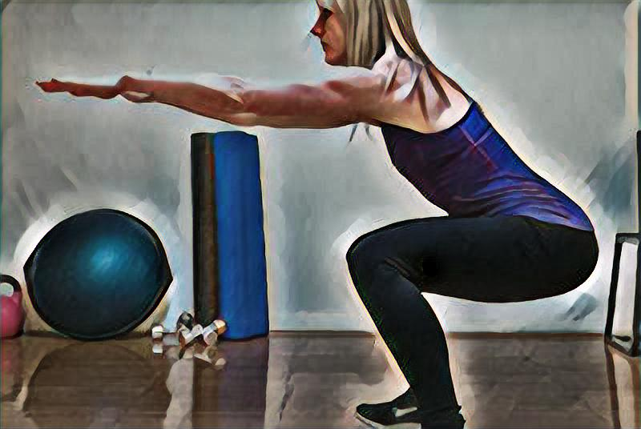

坐姿腿弯举（Seated Leg Curl） 坐姿腿弯举和其他腿弯举一样都是锻炼股二头肌的孤立动作，专业运动员赛前采用此练习可拉出“钢丝绳”般的股二头肌。 动作要领： 1.坐在腿弯举机上，双脚踝反勾横杠，腰背靠紧靠板，双手握凳杠。 2.小腿向后用力做弯举动作，到股二头肌收紧时稍停片刻，然后控制性缓慢向上还原。 3.小腿向后弯曲用力时臀部不要离开坐垫，以免借力。 注意事项： 1.弯举时大、小腿之间的夹角不小于60度，否则影响动作质量。 2.小腿还原时两腿不要完全伸直，膝关节不要锁紧，以防损伤。
俯身屈腿〈Close Grip Barbell Press〉 动作要领 俯身屈腿动作一： 脸部朝下，胯部抵在健身球上，双手撑地。 俯身屈腿动作二： 双腿分开，膝盖弯曲，脚背自然弯曲，脚心朝上，大腿与地面平行。上下摆动双腿，摆动的同时收紧臀部，保持腹部紧张，以避免背部拱起，并且不要让球滚动。每组15次做3组。

坐姿腿屈伸〈Leg Extension〉 坐姿腿屈伸（Leg Extension）是锻炼股四头肌的孤立动作，是比较理想的用于雕塑股四头肌的形状和线条动作，通过此动作会让大腿前侧的肌肉线条更加清晰。夏天穿短裤的时候，股四头肌的健美会给整个人增添不少的光彩。动作要领： 1.坐在腿屈伸机上，腰背靠紧靠板，两手握扶把，两腿屈膝下垂，双脚勾住横杠。
2.股四头肌收缩用力伸小腿举起重量,在最高点时充分收缩股四头肌，稍停。然后慢慢下放重量，至最低点前接着做下次动作。